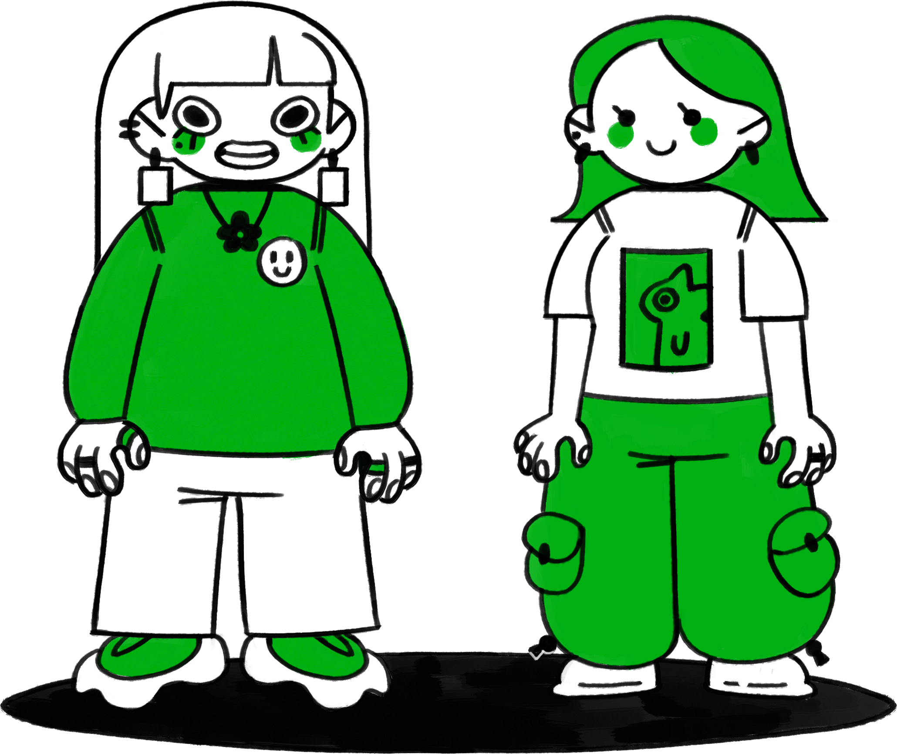

On débute ! Et on serait ravi de vous accompagner dans votre aventure, et de vous emmener dans la notre !! :)
A nous deux, et grâce à nos formations respectives: un bts et une formation en design graphique aux beaux-arts pour Margot et un Bachelor en concept art et illustration pour Eva, nous formons un duo de choc prêt à tout pour réaliser votre projet le plus fou ou faire naître et grandir ensemble l’idée encore toute jeune dans votre tête !!
Qu’est-ce qu’on peut concrètement faire pour vous ?
Et bien plein de choses :)
Définir ou redéfinir votre identité visuelle, besoin d’un personnage pour incarner votre marque ou société ? C’est possible !
Une édition ou une affiche pour un événement ou encore la mise en page de votre livre, que ce soit une édition d’art ou un manuel pratique, et même une courte bd pour raconter l’histoire de votre maison, et plus encore !!
Alors n’hésitez pas à faire appel au duo de sisters du studio aigre-doux ;)
